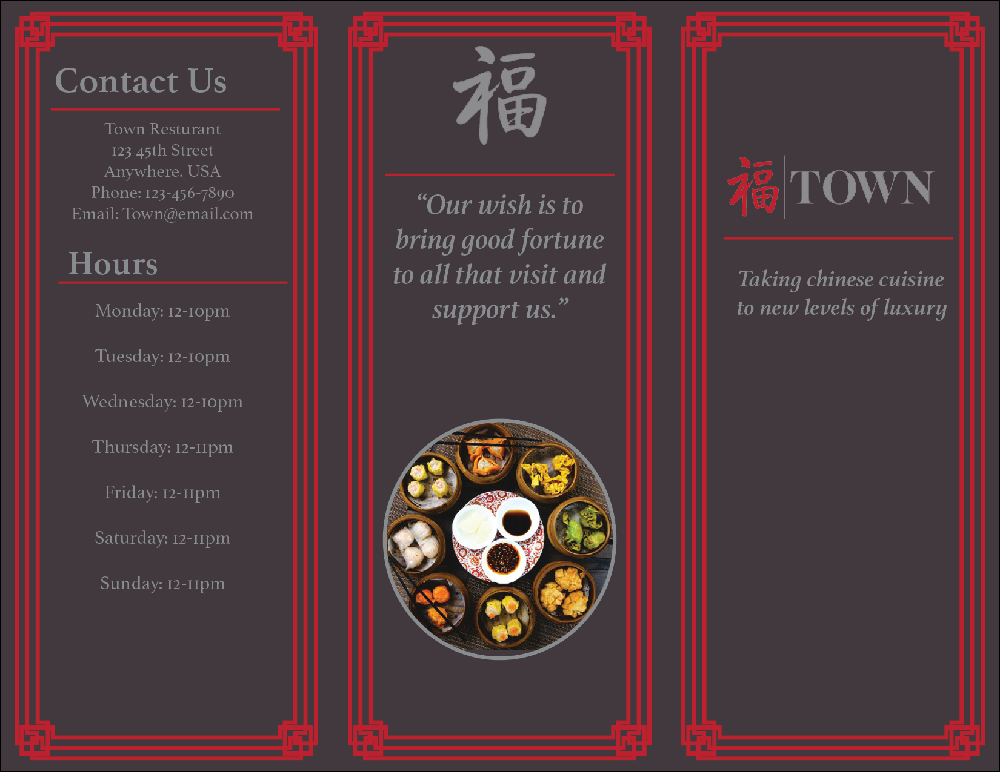
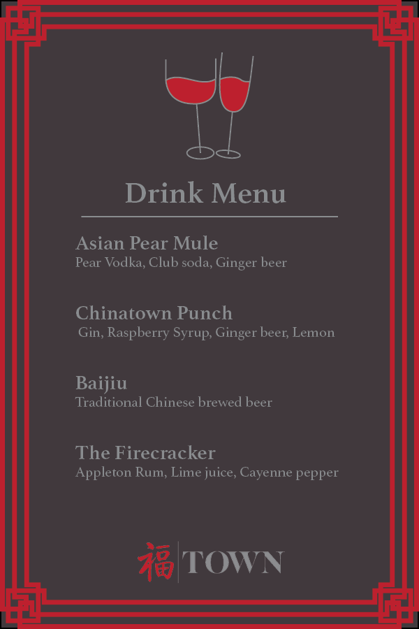
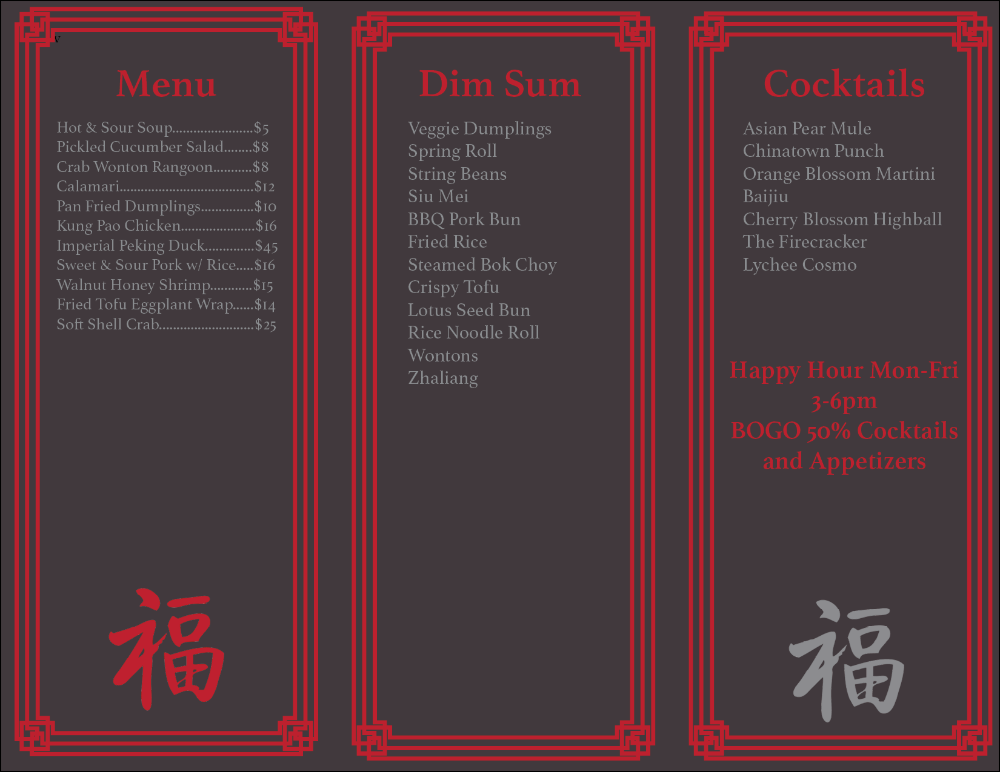

Town is a sophisticated Chinese restaurant that embodies luxury and refinement. As part of my coursework at Southern New Hampshire University, I designed a menu, brochure, and drink menu that adhered to the brand's strict guidelines. Employing my skills in Adobe InDesign and Illustrator, I crafted elegant and visually stunning materials that reflect the restaurant's high-end aesthetic.



